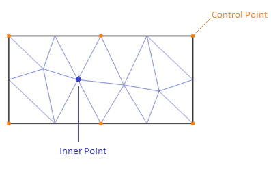

Slides
the summary of the presentation is presented below

A perspective with modern OpenGL
Barycentric coordinates yield to powerful and simple paradigm to interpolate data values on polyhedral domains. But with Local Barycentric coordinates we produce an interpolation between control points and inner points locally and win computational cost and storage requirements, inner points represent interior points of the domain as an affine combination of a set of control points.
The present project calculates the deformation of models, particularly deformed boxes of 2D or 3D models. This deformation is carried out locally with respect to the whole domain of the model that is applied to the different mathematical methods so that the domain can be completely measured with respect to a single deformation at a control point. Separate the variation level by different colorations.
the summary of the presentation is presented below
Loreo totam.
For the project in general about Local Barycentric Coordinates, you can go to https://github.com/bldeng/LBC , this project has support only on 2D space. For more contact with the authors, you can write to the emails bldeng@gmail.com (Bailin Deng) and liuzishun@gmail.com (Zishun Liu).
With respect to my contribution about the LBC project, you can contact me directly through christian.cordova@ucsp.edu.pe
Original paper: Juyong Zhang, Bailin Deng, Zishun Liu, Giuseppe Patanè, Sofien Bouaziz, Kai Hormann, and Ligang Liu. 2014. Local barycentric coordinates. ACM Trans. Graph. 33, 6, 2014.
We will show some concepts necessary for the understanding of the topic.